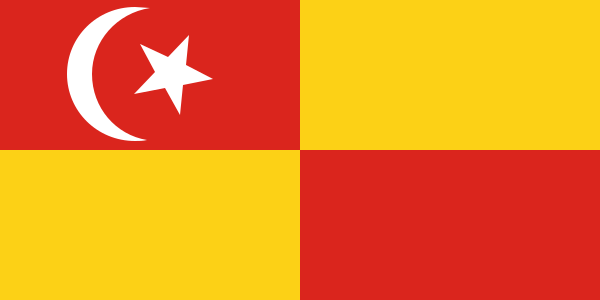
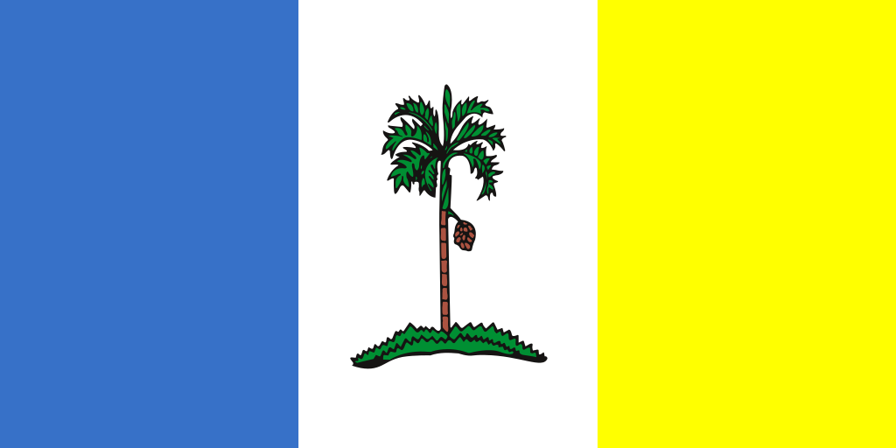
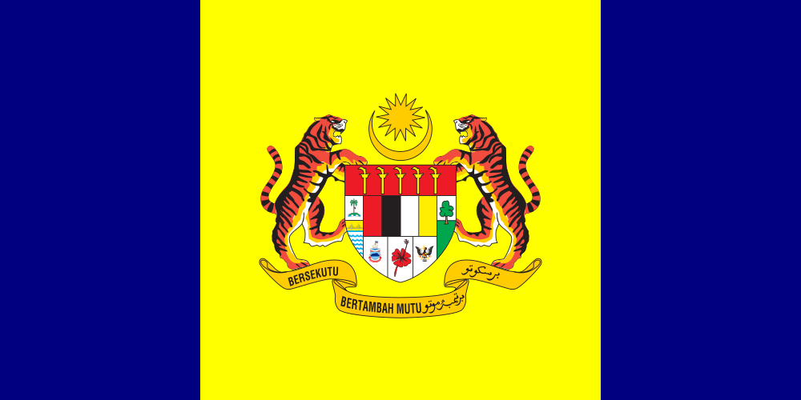

<ion-header [translucent]="true">
  <ion-toolbar>
    <ion-title style="font-size: 17px;">
      COVID-19 Cases in Malaysia
    </ion-title>
  </ion-toolbar>
</ion-header>

<ion-content [fullscreen]="true">
  <ion-list>
    <ion-item>
      <ion-label>Pick Date</ion-label>
      <ion-select (ionChange)="pickDate($event)" interface="action-sheet">
        <ion-select-option *ngFor="let date of dates" value="{{date.Date}}">{{date.Date}}</ion-select-option>
      </ion-select>
    </ion-item>
  </ion-list>

  <div *ngIf="showData" class="total-div">
    <ion-label>Total Cases</ion-label>
    <ion-text style="float: right; align-items: center;font-weight: 600;" slot="end">{{totalCase}}</ion-text>
  </div>
  
  <!-- Chart Canvas -->
  <canvas #barCanvas style="position: relative; height:20vh; width:40vw"></canvas>

  <!-- List of cases based on state -->
  <div *ngIf="showData">
    <ion-list>
      <ion-item>
        <ion-label><b>States</b></ion-label>
        <ion-text slot="end"><b>Cases</b></ion-text>
      </ion-item>
      <ion-item *ngFor="let data of dataByDate">
        <ion-avatar slot="start">
          
          
          
          
          
          
          
          
          
          
          
          
          
          
          
          
        </ion-avatar>
        <ion-label>{{data.State}}</ion-label>
        <ion-text slot="end">{{data.NoOfCases}}</ion-text>
      </ion-item>
    </ion-list>
  </div>


</ion-content>
